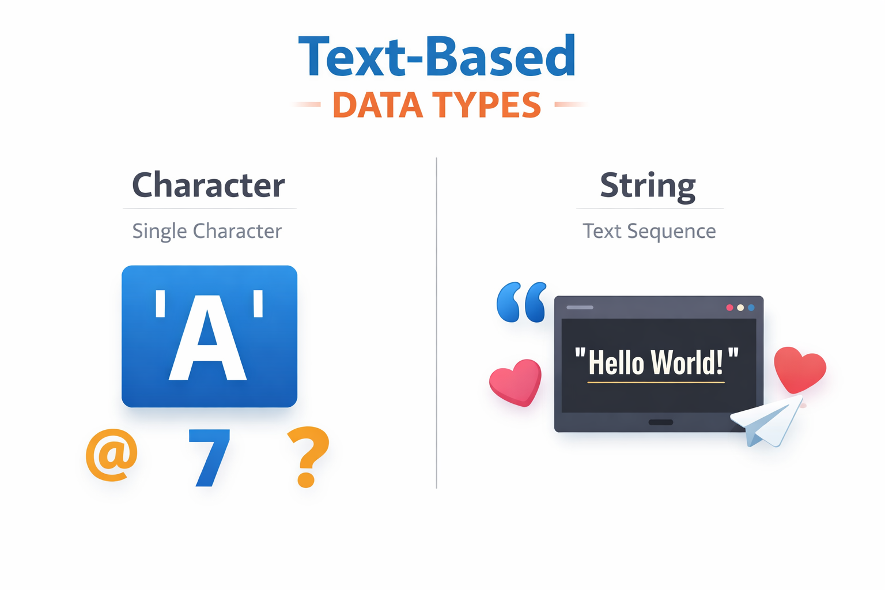
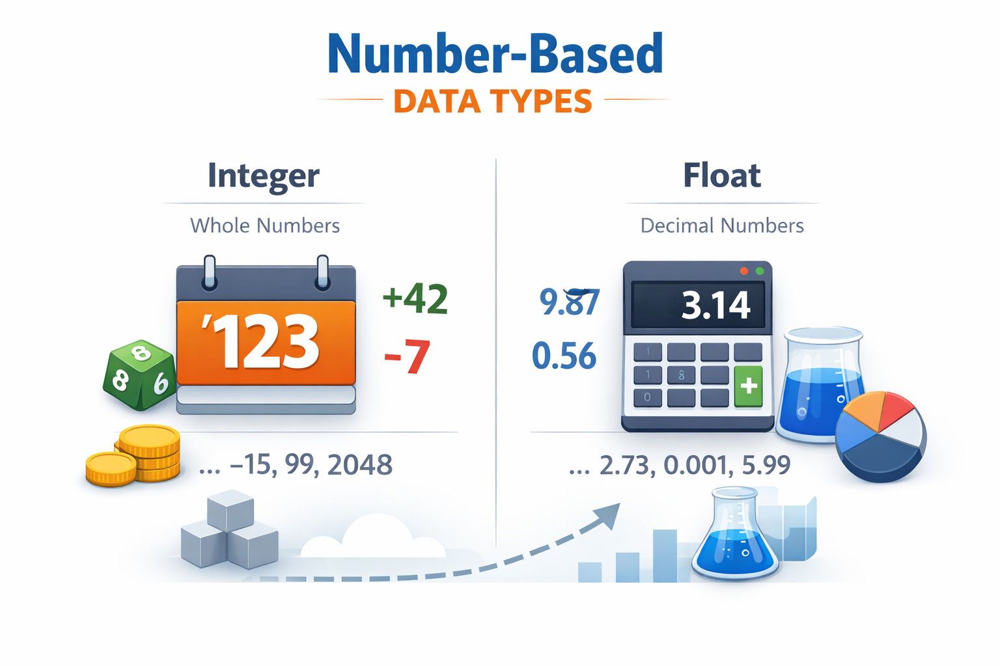
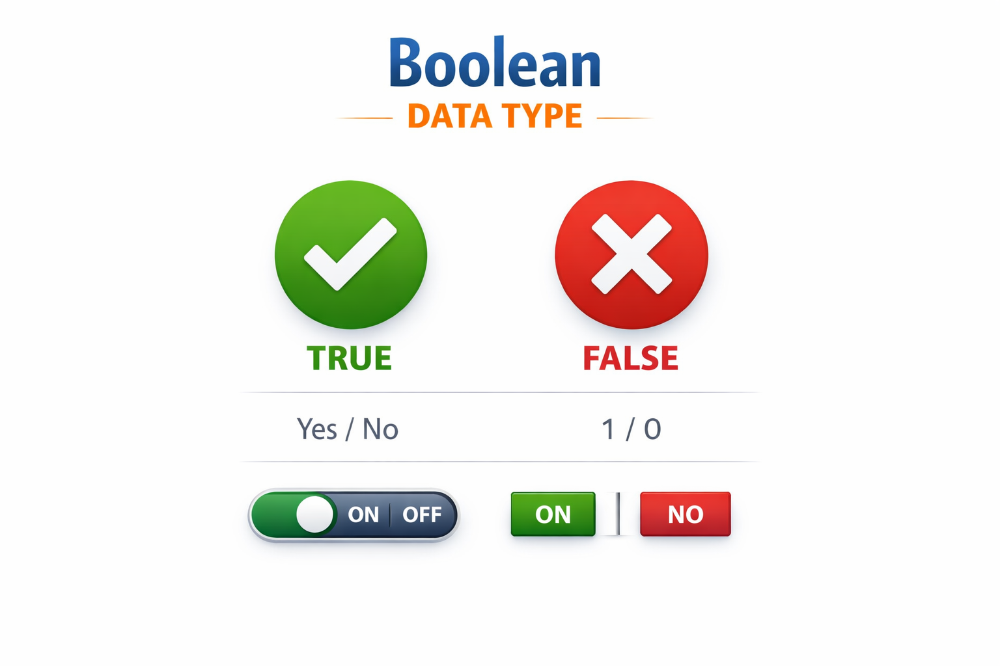

Text-Based Data Types
- Character: A single letter, number, space, or symbol (e.g., 'A', '7', or '$').
- String: A sequence of characters (e.g., "Hello, World!").
Hope this helps you understand the different data types used in programming.


